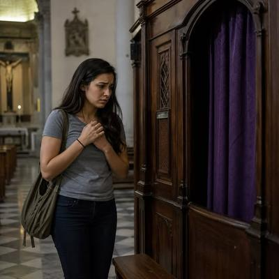

Para miles de millones de cristianos, el sacramento o rito de la penitencia o de la confesión, es un acto sagrado mediante el cual obtienen el perdón de sus pecados. La Iglesia Católica considera que fue instituido por «Jesucristo», posición que también comparten las iglesias ortodoxas y la copta. La Comunión Anglicana mantiene la confesión privada de forma opcional, mientras que algunas iglesias luteranas conservan confesiones públicas y privadas. En cambio, la mayoría de las iglesias evangélicas y protestantes sostienen que el creyente debe confesar directamente sus faltas a «Dios», sin intermediarios, apoyándose en textos como 1 Timoteo 2:5: «Hay un solo mediador entre Dios y los hombres».


Sin embargo, desde un punto de vista histórico, resulta muy difícil sostener que Jesús instituyera la confesión tal como hoy existe. Los principales textos utilizados para justificarla son: Juan 20:23, donde Jesús dice: «A quienes remitiereis los pecados, les son remitidos», y Santiago 5:16: «Confesaos vuestras ofensas unos a otros». Pero ninguno de esos pasajes describe sacerdotes escuchando confesiones privadas, ni establece un rito obligatorio, periódico y sacramental.
Durante los primeros siglos del cristianismo, lo que existía era la penitencia pública, reservada para pecados considerados especialmente graves, como el homicidio, el adulterio o la apostasía. En ella, el penitente reconocía públicamente su falta ante el obispo y la comunidad. Pero era un procedimiento excepcional, muy distinto de la confesión privada actual. Esta última apareció siglos después, entre los siglos VI y VII, en monasterios irlandeses, donde comenzó la práctica de confesar los «pecados» a un monje que imponía penitencias específicas. Existían incluso manuales que asignaban castigos según cada falta. Pero más tarde, en 1215, el IV Concilio de Letrán, convocado por el papa Inocencio III, convirtió la confesión anual en una obligación para todos los cristianos occidentales. Y el confesionario cerrado tal como hoy se conoce, apareció aún después, durante la Contrarreforma del siglo XVI.
En otras palabras, el sacramento actual no nació con Jesús ni con los primeros apóstoles, sino que fue el resultado de un largo proceso de desarrollo institucional que tardó más de mil años en consolidarse.
Ahora bien, desde la psicología, la confesión merece un análisis interesante. El sistema funciona sobre un mecanismo relativamente sencillo: primero se enseña al creyente que numerosos pensamientos, deseos o conductas constituyen pecados, y luego se le ofrece un medio exclusivo para aliviar la culpa que esos pecados producen. La culpa genera ansiedad, la confesión reduce temporalmente esa ansiedad, y el creyente aprende que sólo mediante ese ritual puede recuperar su tranquilidad «espiritual».
Y a decir verdad, este alivio emocional puede ser completamente real, pero no demuestra necesariamente la existencia de un perdón «sobrenatural». Más bien, la psicología explica ese efecto mediante procesos bien conocidos, como la verbalización emocional, la reducción de la ansiedad, el efecto placebo, la validación por parte de una figura de autoridad, y la sensación de haber reparado una falta.
Pero uno de los aspectos más discutibles del sistema es que convierte asuntos completamente privados en materia de supervisión religiosa: pensamientos sexuales, fantasías, conflictos de pareja, problemas familiares o deseos íntimos que probablemente nunca serían compartidos con amigos o familiares, terminan siendo revelados a un sacerdote cuya autoridad deriva precisamente de representar a un inexistente «Dios».
Desde una perspectiva centrada en la autonomía personal, resulta difícil considerar saludable que una institución tenga acceso sistemático a la esfera más íntima de miles de millones de personas. En una relación terapéutica moderna, el paciente decide libremente qué información comparte, y lo hace buscando su propio bienestar. En cambio, la confesión suele presentarse como un deber religioso cuyo incumplimiento puede poner en peligro la salvación eterna. O sea, la diferencia entre ambas situaciones es considerable.
Pero la cuestión adquiere una dimensión aún más delicada cuando se trata de niños. En muchos países de tradición católica, la primera confesión se realiza alrededor de los siete u ocho años, cuando los menores todavía están formando conceptos básicos sobre intimidad, vergüenza y autonomía. Y a esa edad, se les enseña que deben revelar sus «pecados» a un adulto desconocido, incluso cuando se relacionan con pensamientos, impulsos propios del desarrollo o conflictos familiares.
Claro, esto no significa que toda confesión infantil produzca un trauma psicológico. La evidencia científica no permite hacer una afirmación tan general. Sin embargo, sí podemos decir que resulta ser una experiencia angustiante o humillante para muchos niños, especialmente cuando intervienen el miedo al pecado, al castigo divino o al infierno. En cambio, la educación psicológica contemporánea suele promover justamente lo contrario: que los menores aprendan a proteger su intimidad, y que comprendan que nadie debe obligarlos a revelar información personal si no se sienten seguros.
Ahora, en el caso de las mujeres, existen implicaciones particulares. Durante siglos, millones de niñas y jovencitas fueron educadas para revelar periódicamente sus pensamientos y acciones más íntimos a un cura varón investido de autoridad religiosa. Y en sociedades patriarcales, esa dinámica reforzó una evidente desigualdad de poder. El cura allí no era simplemente un consejero, sino un portavoz de «Dios», capaz de influir en decisiones relacionadas con la sexualidad, el matrimonio o la maternidad.
Por supuesto, no podemos afirmar que la mayoría de los sacerdotes haya abusado de su posición; no existen pruebas que permitan sostener tal afirmación. Pero precisamente porque existe una marcada asimetría de autoridad, cuando han ocurrido abusos psicológicos o sexuales, las víctimas se han encontrado en una situación de especial vulnerabilidad. Mientras la psicología contemporánea insiste que cualquier relación donde una persona concentra una autoridad moral tan amplia requiere mecanismos de protección muy sólidos, algo que las instituciones religiosas no siempre han garantizado.
A menudo se afirma también que la Iglesia Católica ha construido, gracias a la confesión, una de las mayores redes de información del mundo, puesto que millones de personas revelan voluntariamente detalles íntimos de sus vidas. Sin embargo, aunque esta idea es frecuente entre críticos del catolicismo, no existen pruebas que demuestren la existencia de una red organizada de espionaje basada en las confesiones. Además, si hemos de confiar en la honestidad de los religiosos (cosa muy difícil), la propia doctrina católica establece el llamado sigilo sacramental, que prohíbe al cura revelar lo escuchado, incluso bajo severas sanciones eclesiásticas. Por supuesto, esto no elimina las preocupaciones sobre la concentración de información íntima en manos del clero, pero conviene distinguir entre críticas fundamentadas y afirmaciones para las que no existe evidencia.
En definitiva, aunque la confesión sigue siendo presentada como un camino hacia la paz «espiritual», desde una perspectiva psicológica secular también puede entenderse como un sistema que fomenta la culpa, fortalece la dependencia hacia una autoridad religiosa, y normaliza la entrega periódica de la intimidad personal.
El hecho de que muchas personas encuentren consuelo en esta práctica, no demuestra que sea necesaria ni beneficiosa para todos. El bienestar emocional puede alcanzarse también mediante la reflexión personal, la reparación del daño causado, el apoyo de familiares y amigos, o la psicoterapia, sin necesidad de atribuir a un intermediario religioso el poder exclusivo de absolver culpas.
Desde esta perspectiva, la salud psicológica se fortalece promoviendo la autonomía, el pensamiento crítico y la responsabilidad personal. Y bajo esa luz, el confesionario deja de verse como un espacio de liberación «espiritual», y pasa a entenderse como un instrumento histórico mediante el cual una institución ha regulado durante siglos la conciencia, la culpa y la vida privada de millones de personas.
[Godless Freeman]
Comentarios
Comments powered by Disqus